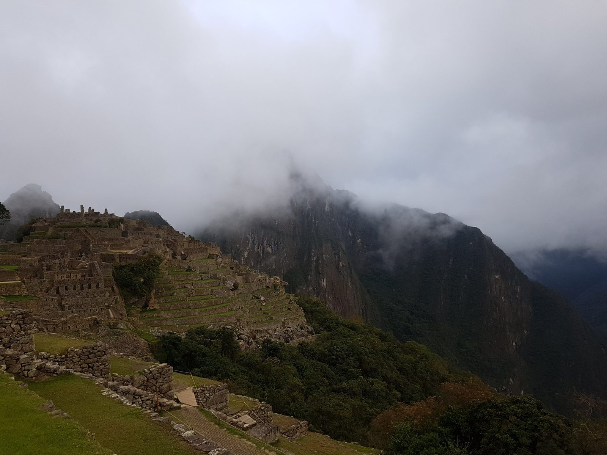
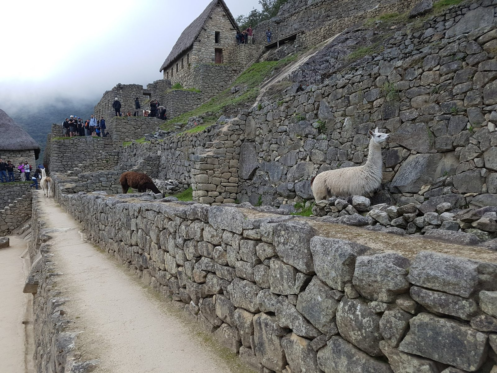
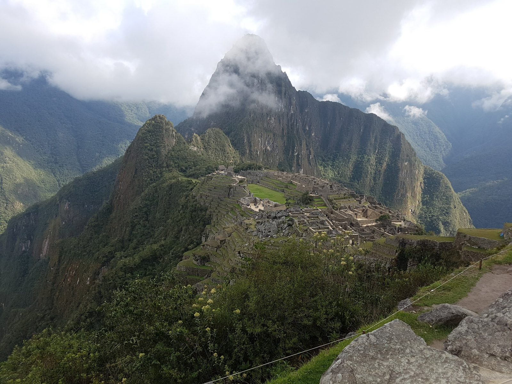
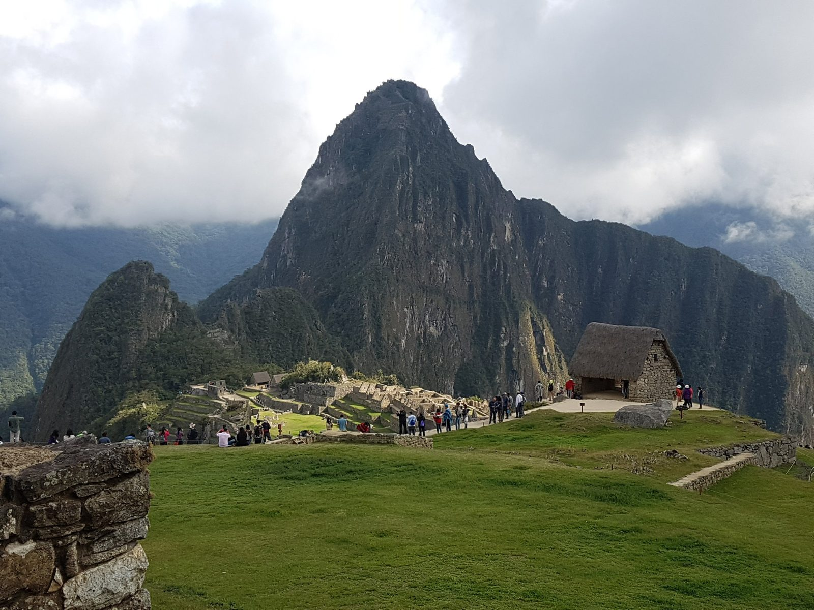
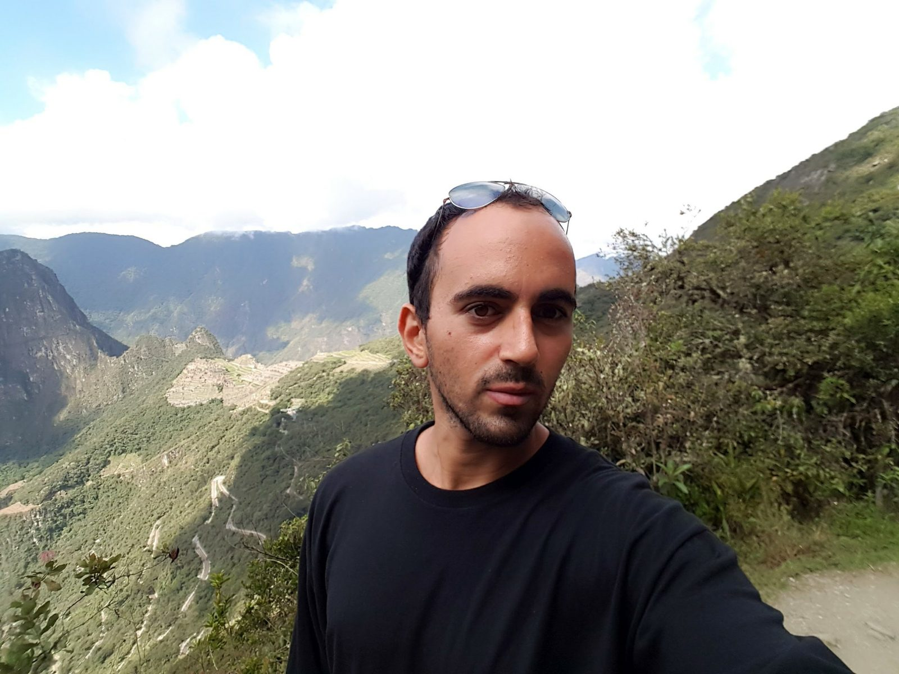
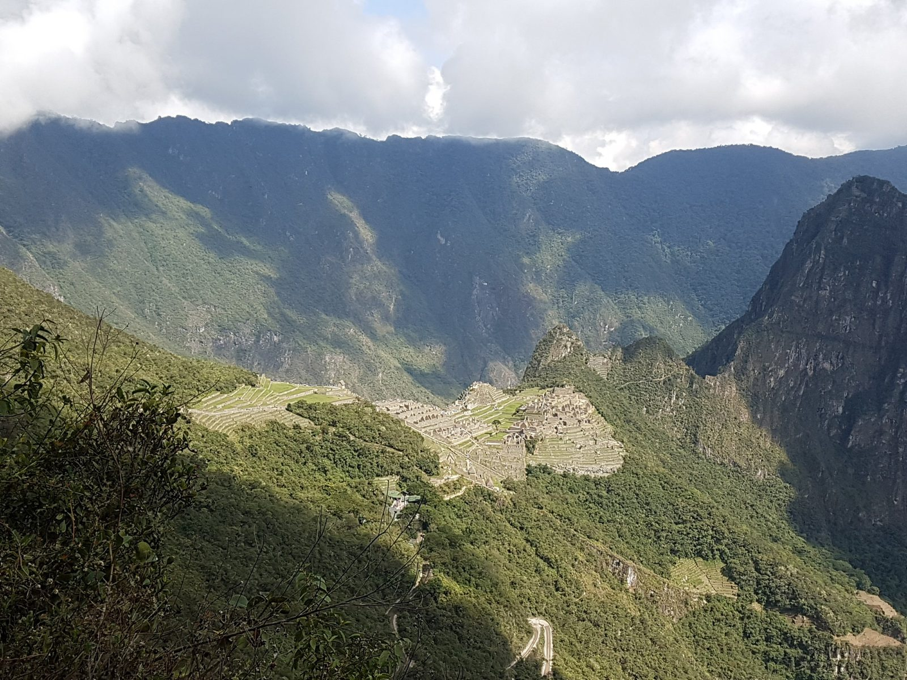
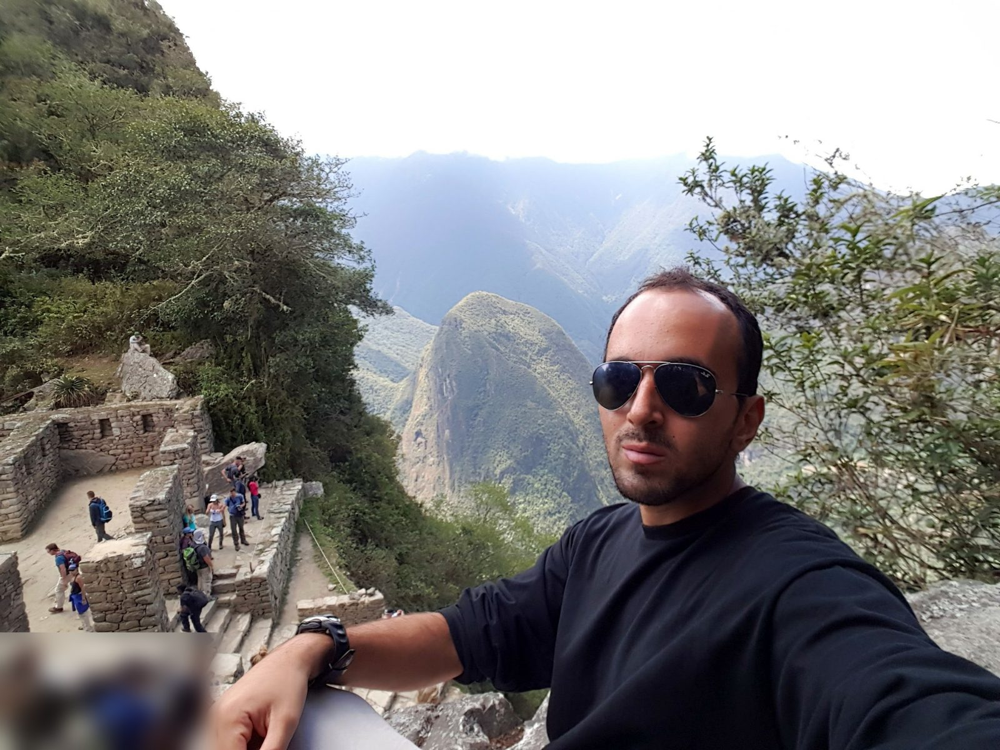

South America · Peru · Machu Picchu
Machu Picchu, October 6, 2017
This is the day the whole route led to. I left Aguas Calientes very early in the morning and walked up to Machu Picchu instead of taking the bus. It was about a thousand steps, probably more, and it was very, very hard. I did not count them, and I did not write down the time I left, so I will not pretend to. I entered without a guide, climbed one of the mountains beside the ruins, and walked back down as well. Every time below comes from my photos and videos (Peru time), and I put current information in separate boxes, with dates and sources.
First light, October 6
By about 06:07 I was among the ruins. The site stayed in cloud for the next two hours, and the paths were almost empty. The ruins come in and out of the fog, and a llama stood on one of the walls above the path. I am not going to name the individual buildings, because I did not note them and I would be guessing.


When the sun came out
The cloud thinned slowly, and I only saw the postcard view for the first time at 08:08. I was there very early, and the site still stayed in cloud for about two hours. After that the grass terraces turned bright green.


Up one of the mountains
After 08:30 my photos change. I am far above the ruins, on a steep path, and the citadel is a pale patch in the distance. I climbed one of the two mountains that stand beside the site, between about 08:35 and 10:40, and I no longer remember which one. Google Photos only places the photos inside the Historic Sanctuary of Machu Picchu, with no trail name, so I will not guess.



Back down
At 12:00 I took a photo from the main viewpoint above the plaza. It is packed with visitors, so their faces make it unusable here. The comparison is the point: the same terraces had been almost empty at six in the morning.
I walked down as well. We did not have a guide inside the site, but the guide of the tour had told us where to meet on the way down, and a minibus was waiting for the group. From there the minibus took us back to Cusco, where I slept that night.
This part is research, not my experience, except where I say so. A guide to the footpath, last modified on September 25, 2026, gives the walk up as about an hour and a half, a little less coming down, on a stone stepped path. It rates it moderate, says no ticket is needed for the path itself (you need the entrance ticket to Machu Picchu), and warns not to walk after dark, around 6 pm. It also says the path is slippery, with ladders, in the wet season (November to April) (The Only Peru Guide, page modified September 25, 2026).
I found it much harder than "moderate", and I started very early. The guide gives no count of the steps. The "about a thousand, probably more" is my own estimate and I did not count them.
Official prices and limits: the Ministry of Culture's rules published on November 1, 2025 set the three circuits (Panoramic, Classic and Royalty) at 64 soles each, and the mountain routes (Machu Picchu Mountain, Huayna Picchu and the Great Cavern trail) at 112 soles. The daily limit is 5,600 visitors from June 19 to November 2, 2026, and 4,500 on the other dates. Tickets are sold only on the official site, tuboleto.cultura.pe (Andina, November 3, 2025).
Entry windows and guides: two tour-operator pages describe one-hour entry windows from 6:00 to 15:00, a ticket valid for a single entry, and one-way routes. One of them, updated on January 22, 2026, says a guide is not clearly required for the citadel circuits, and the other, updated on April 21, 2026, says a guide is not mandatory but recommended (How To Peru, January 22, 2026; TR Experience Peru, April 21, 2026). They disagree on the maximum stay, so check what is printed on your ticket. These rules have changed several times, so check the official site before you go.
I climbed one of these two but do not know which, so this is only research. A trekking agency's guide to Huayna Picchu, published on February 27, 2026 and updated on May 4, 2026, says the climb allows 350 people a day, in two groups of 175. The first enters the main circuit between 7:00 and 8:00 and the mountain between 8:00 and 9:00. The second enters the circuit between 9:00 and 10:00 and the mountain between 10:00 and 11:00. It gives about three hours for the round trip (Salkantay Trekking, updated May 4, 2026). The mountain tickets are the 112-soles routes above, so they are limited and cost more than the circuits.
What I would tell a friend
- An early start does not guarantee the view. I was there very early and still saw the postcard view only at 08:08.
- I did the whole day without a guide inside the site, and walked both ways. It was very hard for me, so start early and take it slowly.
- By noon the main viewpoint was crowded. The quietest hours I saw were between 06:00 and 08:00.
The exact time I left Aguas Calientes and the time I entered the site, and which mountain I climbed.
Previous: Inca Jungle and Aguas Calientes, October 4 and 5. Next: Ausangate Seven Lakes, October 9.